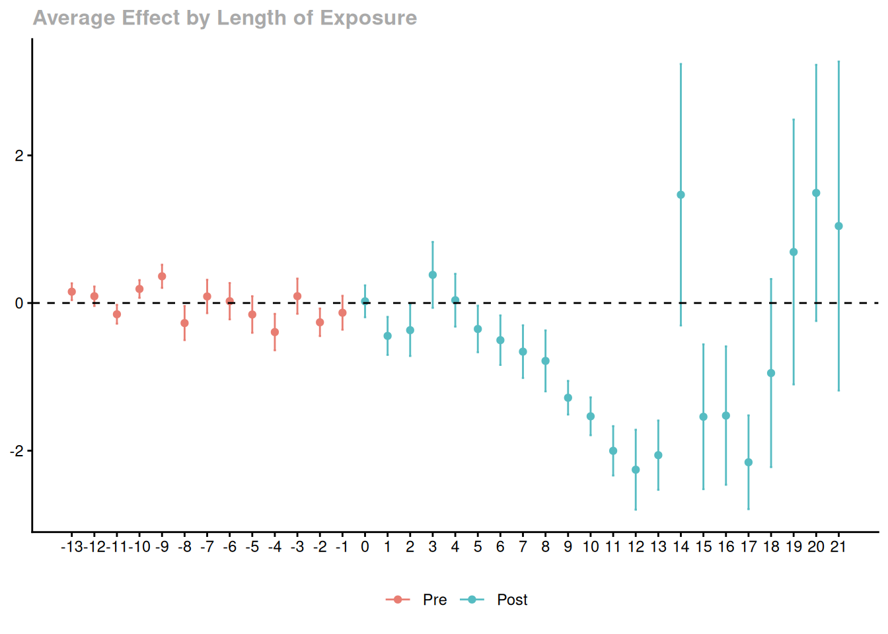

La double différence constitue le second centre de gravité du format 5 jours. Elle combine deux idées déjà rencontrées séparément :
comparer des unités traitées et non traitées ;
comparer des périodes avant et après traitement.
Dans ce chapitre, on applique cette logique à des mailles spatiales dont la date de traitement varie dans le temps.
9.2 Pourquoi cette étape compte
La méthode permet d’aller plus loin que les comparaisons simples, mais au prix d’une hypothèse centrale : les tendances parallèles. Autrement dit, en l’absence de traitement, les groupes comparés auraient dû suivre des trajectoires comparables.
9.3 Préparer le panel à partir des mailles appariées
On repart de l’objet de mailles appariées et on lui rattache la série de couvert forestier détaillée, issue de l’objet mapme correspondant.
Comme dans les chapitres précédents, le passage en format long est une étape clé. Il permet ici de suivre, pour chaque maille, l’évolution de la variable d’intérêt dans le temps.
Cette sortie est déjà très informative. Elle signale aussi qu’une partie des lignes ou des unités peut être écartée pour rendre le panel conforme aux exigences de la méthode. Cela ne doit pas être ignoré dans l’interprétation.
9.7 Lecture graphique
Code
ggdid(agg_att_mailles)

Le graphique dynamique aide à distinguer :
les périodes avant traitement ;
l’année de traitement ;
les effets après traitement.
Dans ce format condensé, l’objectif principal n’est pas d’entrer dans tous les détails du package did, mais d’apprendre à lire cette sortie et à la relier à l’hypothèse de tendances parallèles.
9.8 Ce qu’il faut retenir
La double différence ne remplace pas le travail méthodologique mené en amont. Elle s’appuie au contraire sur tout ce qui précède :
le choix de l’unité d’analyse ;
la définition du traitement ;
la construction d’un échantillon plus comparable ;
la vérification de la structure temporelle.
Autrement dit, l’estimation finale n’a de sens que si la chaîne complète reste cohérente.